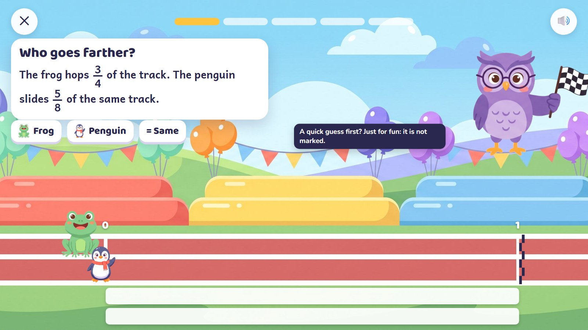
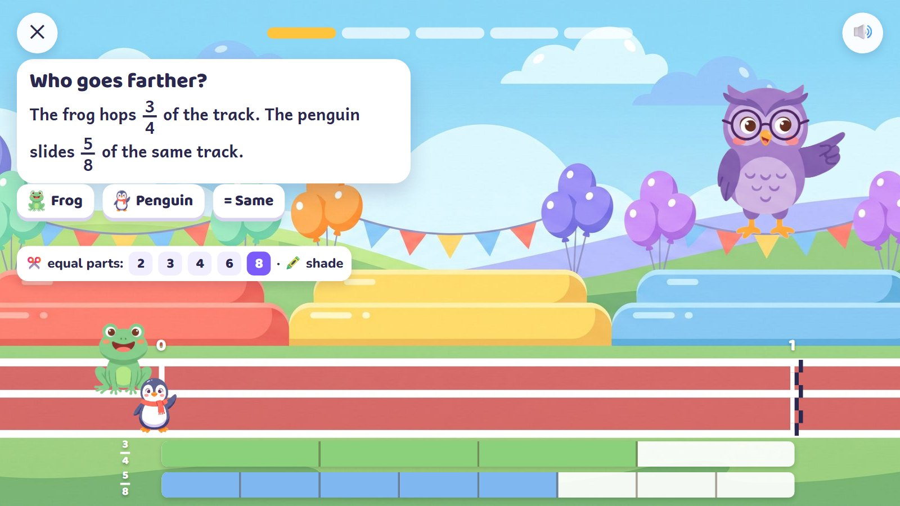
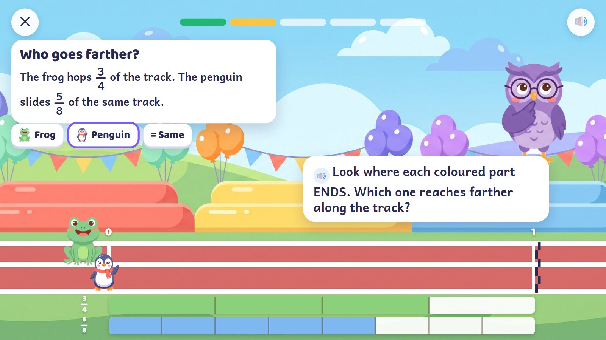
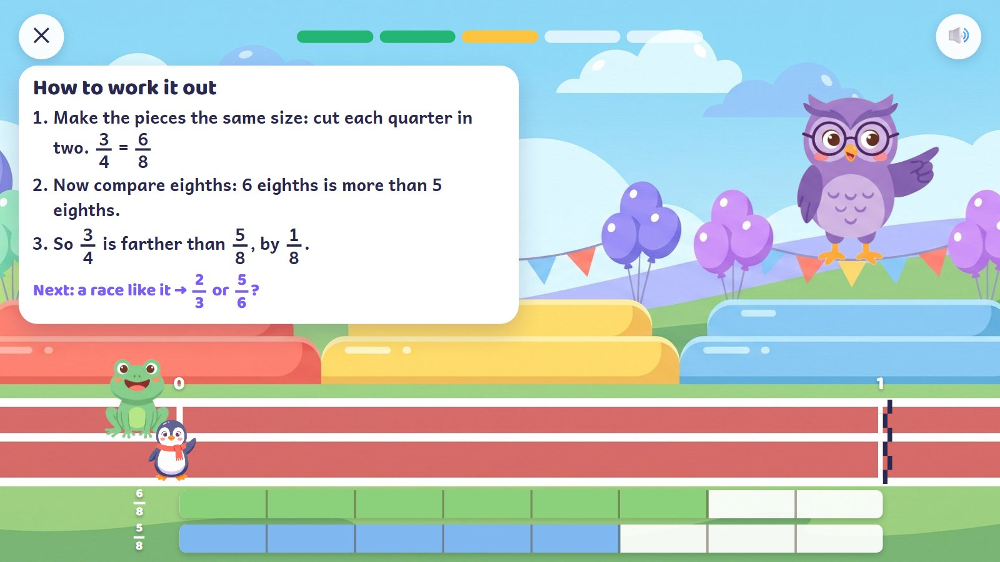
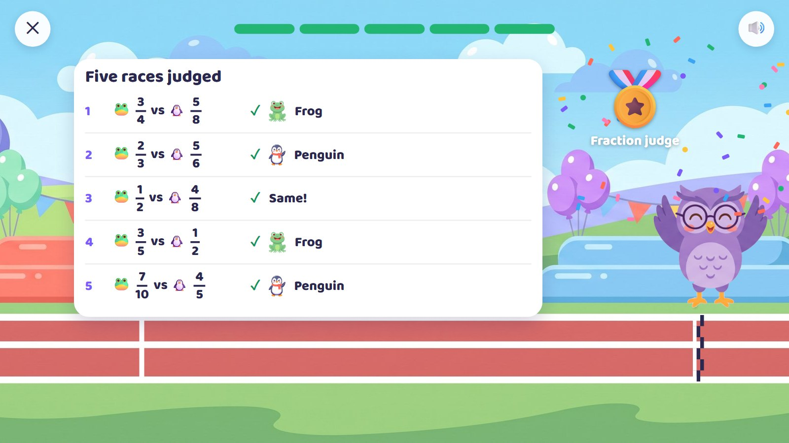

Owl's Fraction Race
Who goes farther: the frog, who hops 3/4 of the track, or the penguin, who slides 5/8 of it? Both run on the same track from 0 to 1, with a bar for each underneath. The child cuts the bars into equal parts, shades them, and chooses frog, penguin or "same". Then GO confirms it. The child is the race judge.
Grades 3–4 · ages 8–10 E17 Equal cuts + E18 Fraction line
Skill: Compare fractions of the same whole; equivalent fractions (3/4 = 6/8). One activity is 5 rounds, about 90–150 seconds.
🎉 The fun
Being the judge; the race shows the answer was right.
🎥 The view
None: the whole track must stay in view to compare.
🎆 The finale
Five races judged and a medal; calm, for older children.
Six moments

1The race card
Both racers on the start line; two whole bars under the track, from 0 to 1. A quick guess is offered, just for fun.
🔊 "Who goes farther?"
Behind the scenes: The guess is never marked; it only gives a reason to check.

2Cut and shade
The child cuts the frog's bar into 4 equal parts and shades 3, and the penguin's into 8 and shades 5.
🔊 (older children work quietly)
Behind the scenes: The cuts are always equal. A wrong number of parts stays on the bar; it is not fixed for the child.

3A wrong try
"5 is more than 3", so the child chose the penguin. The choice stays marked; the racers stay at the start.
🔊 "Look where each coloured part ENDS. Which one reaches farther along the track?"
Behind the scenes: There is no race before the answer is right: GO confirms, it never decides.

4Second try, then GO
The frog. Its bar is cut again into eighths: 3/4 is 6/8. GO: both run at the same pace and stop exactly at their markers.
🔊 "3/4 is 6/8. The frog goes 1/8 farther!"
Behind the scenes: A small marker on the ground under each racer lines up with the end of its bar.

5How to work it out
After a second miss (or "show me how"): the steps, then a fresh race like it.
🔊 "Next: 2/3 or 5/6?"
Behind the scenes: The steps come from the numbers; the new race counts as finished, but not as a first try.

6Five races judged
A short record of the five races and a medal.
🔊 "Fraction judge!"
Behind the scenes: Three in four Grade 3–4 activities are plain practice screens; this one is a light game around the same maths.
The frames are mock-ups: Gemini's drawings (backgrounds, friends, things) and shapes and numbers drawn by code, put together as the app would at run time. In the app everything moves; here it stands still.
How it changes
| What changes | Range |
|---|---|
| Bottom numbers | halves and quarters → 2 to 6 → 2 to 12 |
| Pairs | the same bottom number; the same top number; related (4 and 8); unrelated (2/3 and 3/4) |
| Answer | frog, penguin or the same |
| Model | bars → a number line → no model |
| Planned activities | E17 60 + E18 60 planned cards |
From a model to a word problem
| Step | In this activity |
|---|---|
| 1. See it | The bars come already cut; shade and compare. |
| 2. Fill one part | One bar is cut; cut the other. |
| 3. On your own | Uncut bars: cut, shade, choose. |
| 4. Check it | "Bird says 5/8 is farther because 5 is more than 3. Is Bird right?" |
| 5. Word problem | "Ana ran 3/4 of the park path and Ben ran 5/8 of the same path. Who ran farther?" |
Wrong answers we expect, and what happens
| Mistake | Looks like | What happens (never red, never "wrong") |
|---|---|---|
| Bigger numbers, bigger fraction | 5/8 is farther than 3/4 | compare where the shading ends |
| Bigger bottom, bigger fraction | 1/8 is farther than 1/4 | "More pieces means smaller pieces." |
| Different wholes | compares parts of different lengths | both bars are always the same track |
| Counts cut lines | not pieces | the pieces number themselves |
What it needs
- The race track (drawn, wide)
- The frog and penguin in race poses, the owl with a flag (drawn)
- The bars and fractions, drawn by code
- Typing and read-aloud for older children
Test robot: Works out both fractions exactly, cuts and shades the bars, and answers. It checks the racers stop exactly at their markers and every worked step is true.